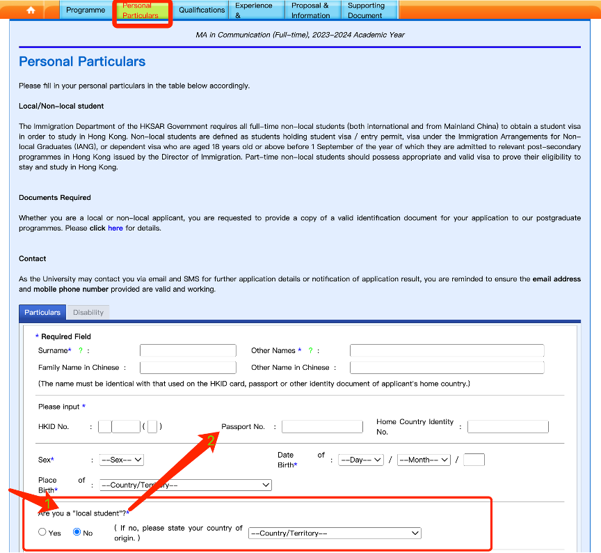
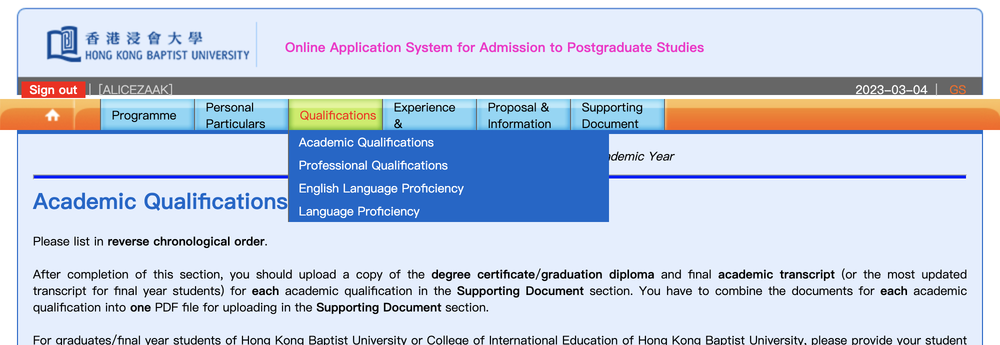
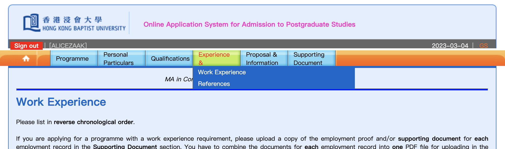

Applier Information 申请人信息



Please DOUBLE CHECK all the information you fill in, this step may take some time, but it’s all worthy.
When it's all done, you can step ahead to “Supplementary Materials & Proposal”
In this “Applier Information”Step, includes 3 Parts, which are a)Personal Particular Part，b)Qualification on Academic、Professional、English and other Languages Part, c)Work experience and its Reference Part.
在“申请人信息”这一步中，包含了3个部分，
a）个人信息，b）学历、技能、语言的资格证明信息，c）工作经历及其证明人的信息。
a)Personal Particular
If you are a non-local student, please select "No" in "Are you a local student" question, and then enter your passport number. Just neglect the HKID No. blank.
a）个人信息
如果你来自非香港地区，请先在“是否本地学生” 的问题中选择 “否” ，然后再回到前面填写包括护照号码在内的信息，忽略“香港身份证号码”的问题就好。
b)Qualifications
In the Qualifications Part, you can put your certifications like NCRA（National Computer Rank Examination）, TEM（Test for English Majors ） and other qualification examination recognized by your country. Also your Education and Language certifications.
b）资格证明信息
在这一部分中，可以填写包括计算机等级考试、专业英语等级考试等资格证明信息。随后，教育信息、语言证明也可以以同样的形式填写。
c)Work experience and its Reference
c）工作经历及其证明人信息 In the job information, you need to add a job reference, fill in the title and position of the reference clearly. Special attention should be paid to fill in the correct E-mail address.
在这一部分中，你需要填写过往的工作经历，包括职位、头衔。尤其需要注意的是正确输入工作证明人的邮件地址。
请多次确认以上的信息，它们关系到学校对申请人资质的审核，虽然这会花不少时间，但如果因为人为因素影响录取结果很得不偿失。
以上完成后便可以进入下一步“Supplementary Materials & Proposal”补充材料和个人陈述